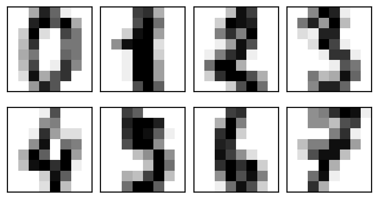
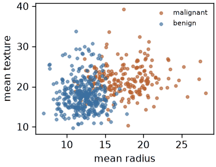
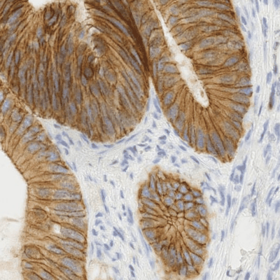
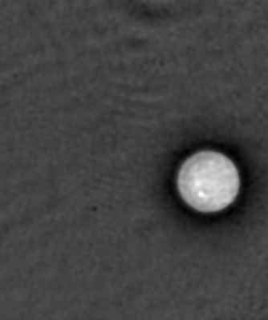
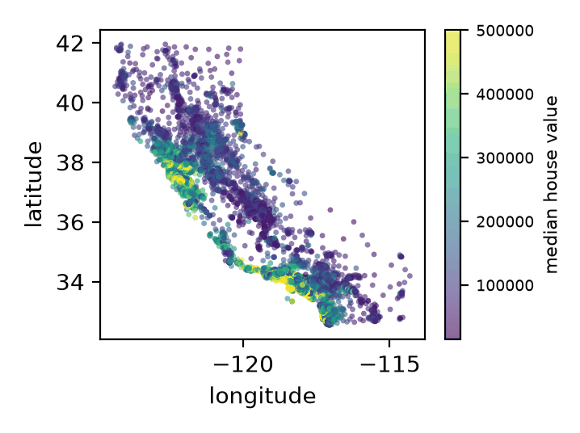
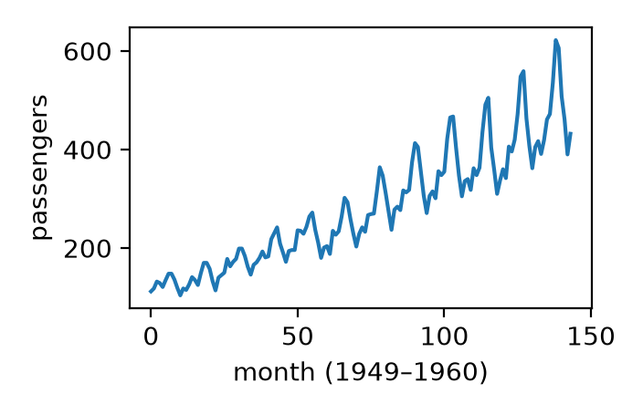
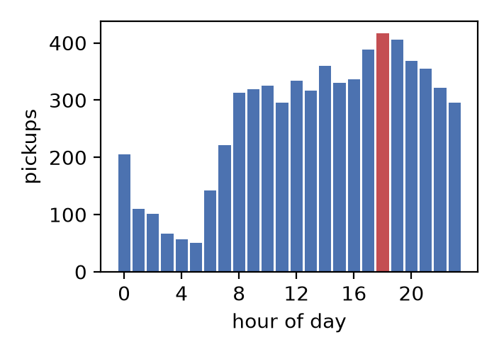

HOUSING = "https://raw.githubusercontent.com/ageron/handson-ml2/master/datasets/housing/housing.csv"
TAXIS = "https://raw.githubusercontent.com/mwaskom/seaborn-data/master/taxis.csv"
FLIGHTS = "https://raw.githubusercontent.com/mwaskom/seaborn-data/master/flights.csv"
housing = pd.read_csv(HOUSING)
taxis = pd.read_csv(TAXIS)
flights = pd.read_csv(FLIGHTS)
print(housing.shape, taxis.shape, flights.shape) # (20640, 10) (6433, 14) (144, 3)Tensores para Aprendizaje Automático
Un taller de 3 horas, más tres controles de conocimiento con Kahoot
Antes de empezar
Has leído Deep Learning, capítulo 2 — Álgebra lineal. Sabes qué es una matriz.
Este taller no supone ningún conocimiento previo de teoría de tensores.
Aquí no hay nada inventado
Once conjuntos de datos. Todos medidos sobre algo que existe.
También hoy
Fotografías · §01 §06 §09 §10
Los datos reales fallan como los números aleatorios nunca fallan: valores faltantes, escalas incompatibles, píxeles que nunca cambian. Encontrarlo es el trabajo.
Programa — 195 minutos
| Hora de inicio | Duración (min) | Parte | Segmento |
|---|---|---|---|
| 00:00 | 5 | — | Preparación y bienvenida |
| 00:05 | 20 | I | Qué es un tensor |
| 00:25 | 20 | II | Pensar en N dimensiones (grupo) |
| 00:45 | 30 | III | Indexación y broadcasting · Reshape y transposición |
| 01:15 | 10 | 🎯 | Kahoot 1 + pausa |
| 01:25 | 15 | III | Diseño de un pipeline de vídeo (grupo) |
| 01:40 | 15 | IV | Contracción con einsum |
| 01:55 | 5 | — | Pausa |
| 02:00 | 15 | IV | Inversas y la pseudoinversa |
| 02:15 | 5 | 🎯 | Kahoot 2 |
| 02:20 | 25 | IV | Recursión · Convolución |
| 02:45 | 5 | — | Pausa |
| 02:50 | 15 | IV | Descomposición de Tucker |
| 03:05 | 10 | 🎯 | Kahoot 3 + cierre |
Dos ritmos, y una advertencia
Bloques de ejercicios — 10 min programando, 5 de explicación.
Bloques de grupo — 10 min de discusión y puesta en común.
La palabra «rango»
Capítulo 2: rango = número de columnas independientes. Teoría de tensores: rango suele significar el número de ejes.
Hoy: «orden» para el número de ejes. «Rango» solo en el sentido del capítulo 2.
00 · Preparación y bienvenida
—
ejecuta esto antes que nada
⏱️5 min asignados
Inicio: +00:00 · Fin: +00:05
Tres descargas, una primera celda
La misma celda instala el backend de ffmpeg que necesita §05 y comprueba el servidor del vídeo, para que un decodificador ausente aparezca ahora y no dos horas más tarde.
Si esto falla, dilo en Discord ahora, no dentro de dos horas.
Al cuaderno
00 · Preparación y bienvenida
El resto viene dentro de las librerías y funciona sin conexión: load_breast_cancer, load_digits, data.camera(), data.astronaut().
01 · Qué es un tensor
I
Parte I · demostración
⏱️20 min asignados
Inicio: +00:05 · Fin: +00:25
El vocabulario
| Término | Significado | Inglés |
|---|---|---|
| Tensor | Array de números con cualquier número de ejes | tensor |
| Eje | Una dirección a lo largo de la cual se ordenan los datos | axis |
| Orden | Cuántos ejes tiene un tensor | order |
| Forma | El tamaño a lo largo de cada eje | shape |
| Corte | Fijar un índice y conservar el resto | slice |
| Fibra | Fijar todos los índices menos uno | fiber |
| Desplegado | Reorganizar un tensor como matriz | unfolding |
| Contracción | Multiplicar y sumar sobre un eje compartido | contraction |
La forma es una tupla; el orden es su longitud

Los dos son de orden 3. Sus ejes significan cosas completamente distintas.
La forma por sí sola nunca te dice qué significan los ejes.
Tres operaciones
Corte — fija un índice. Fibra — fija todos menos uno.
Tres operaciones
Desplegado — convertir cualquier tensor en una matriz.
El desplegado no pierde nada. Ahora sirve cualquier herramienta matricial que ya conoces.
Tres operaciones
Contracción — multiplicar sobre un eje compartido y sumar sobre él.
La regla, en una frase
Un índice que está en las entradas pero no después de la flecha se suma. Un índice que aparece después de la flecha se conserva.
El mapa de las factorizaciones
| Método | Actúa sobre | Dónde hoy |
|---|---|---|
| LU | Matriz cuadrada | ahora |
| QR | Cualquier matriz | ahora |
| Descomposición espectral | Matriz cuadrada | §08 |
| SVD | Cualquier matriz | §07, §10 |
| Pseudoinversa | Cualquier matriz | §07 |
| Cholesky | Matriz simétrica definida positiva | §11 |
| Tucker / CP | Tensor de cualquier orden | §10 |
Todo salvo la última fila trabaja con dos ejes. Los datos reales tienen más.
Al cuaderno
01 · Qué es un tensor
02 · Pensar en N dimensiones
II
Parte II · discusión en grupo · sin código
⏱️20 min asignados
Inicio: +00:25 · Fin: +00:45
Vuestra tarea
Una imagen en escala de grises es una matriz. Casi nada en aprendizaje automático es una sola imagen en gris. Cada cosa que añades — color, muchos ejemplos, tiempo — añade un eje, y cada eje significa algo distinto.
Discutid qué eje va dónde, y por qué.
10 minutos en vuestro canal y luego puesta en común.
Las cinco preguntas
(H, W)→ imagen en color → lote → vídeo → lote de vídeos. ¿Qué cuenta cada eje nuevo? No digáis «añadimos una dimensión».- Un eje de lote y un eje temporal son idénticos en el código. ¿Qué cambia en su significado? ¿Qué pasa si barajas cada uno?
- Los vídeos reales tienen longitudes distintas. Dos formas de agruparlos en lote: ¿qué pierde o inventa cada una?
- Células fotografiadas cada 10 min durante 48 h: ¿intervalo entre fotogramas → ? ¿campo de visión → ? ¿número de placas → ?
- ¿Hay un límite al número de ejes de un tensor?
Puesta en común
gray_image = np.zeros((28, 28)) # (H, W)
color_image = np.zeros((28, 28, 3)) # (H, W, C) + color
batch_of_images = np.zeros((32, 28, 28, 3)) # (N, H, W, C) + muchos ejemplos
video = np.zeros((16, 28, 28, 3)) # (T, H, W, C) + tiempo ordenado
batch_of_videos = np.zeros((8, 16, 28, 28, 3)) # (N, T, H, W, C)La pregunta 2 es la clave. Barajar el eje 0 es inofensivo en un lote y destruye un vídeo.
La notación del capítulo 2 no tiene ningún concepto de «el orden entre elementos importa». Eso sí es nuevo hoy.
Al cuaderno
02 · Pensar en N dimensiones
03 · Indexación y broadcasting
III
Parte III · ejercicio
⏱️15 min asignados
Inicio: +00:45 · Fin: +01:00
Por qué importa
569 pacientes reales, 30 medidas reales de núcleos de células tumorales.
- Elegir la columna equivocada no da ningún error
- Devuelve otra medida real
- Tu análisis continúa y da una respuesta segura y equivocada

En investigación: resultados que nadie puede reproducir. En una herramienta clínica: una recomendación errónea sobre una persona real.
El ejercicio
# TODO 2: Extrae "mean radius" con names.index(...). No escribas un número fijo.
# TODO 3: Los 5 pacientes con mayor "mean radius", perfil completo, UNA operación.
# TODO 4: Indexación booleana — maligno (y == 0) frente a benigno (y == 1).
# TODO 6: Estandariza con broadcasting: (D - mean) / std. MIRA EL RESULTADO.
# TODO 7: Aparecerán NaN. ¿Cuántos píxeles tienen std == 0, y por qué?Dos resultados reales
Los tumores malignos sí tienen un radio medio mayor: 17,5 frente a 12,1.
Tres píxeles están siempre oscuros en las 1797 imágenes de dígitos: esquinas donde nadie escribe. Desviación típica exactamente cero → NaN.
Con datos aleatorios nunca habrías visto esto.
Al cuaderno
03 · Indexación y broadcasting con datos reales
04 · Reshape y transposición
III
Parte III · ejercicio
⏱️15 min asignados
Inicio: +01:00 · Fin: +01:15
Por qué importa
Los microscopios y las cámaras ordenan sus ejes según el hardware, no según lo que espera un modelo.
. . .
Equivocarse no provoca ningún fallo. El modelo se ejecuta sobre datos revueltos y devuelve resultados seguros y sin sentido.
. . .
La versión famosa: un modelo entrenado en TensorFlow (NHWC) desplegado en PyTorch (NCHW) sin transponer.


La misma forma, datos distintos
reshape solo reinterpreta los números en el orden en que están en memoria. transpose los mueve según el significado de cada eje.
Cuando dos ejes tienen el mismo tamaño
Ahora dos ejes miden 3. ¿Cómo sabes cuál es cuál?
No lo sabes. Solo tu propio seguimiento puede decírtelo. Nada en el array lo registra.
Al cuaderno
04 · Reshape y transposición de imágenes reales
🎯 Kahoot 1
Kahoot 1 — Vocabulario de tensores y formas
6 preguntas · unos 5 minutos
Entrad en kahoot.it
PIN en pantalla
Cubre: orden, eje, forma, corte, fibra, varianza, reshape, transposición
05 · Diseño de un pipeline de vídeo
III
Parte III · discusión en grupo
⏱️15 min asignados
Inicio: +01:25 · Fin: +01:40
Diseñad las dos tuberías
archivo → fotogramas decodificados → lote preprocesado → entrada del modelo → salida del modelo
Tecnología — una app de vídeos cortos que calcula un embedding por vídeo a partir de fotogramas muestreados.
Biotecnología — un modelo que etiqueta la fase actual de una operación quirúrgica.
No hay una única respuesta correcta.
Las cinco preguntas
- Dibujad la forma en cada una de las cinco etapas, para los dos sistemas. ¿Dónde tienen que diferir?
- 30 segundos frente a 4 horas. Dad la forma exacta del lote preprocesado. ¿Qué representa un valor inventado o desperdiciado?
- Tres ángulos de cámara a la vez. ¿Dónde va ese eje?
- 8 fotogramas muestreados de 900: ¿qué operación de la §03 es esa, y qué se pierde?
- ¿Qué fotogramas importan más? ¿Qué mecanismo podría aprender ese peso?
Dónde divergen
La respuesta a la pregunta 5 es la atención — la §11 la construye con dos llamadas a einsum, y la máscara de relleno de la pregunta 2 resulta ser la misma máscara que necesita la atención.
Al cuaderno
05 · Diseño de un pipeline de vídeo
06 · Contracción con einsum
IV
Parte IV · ejercicio
⏱️15 min asignados
Inicio: +01:40 · Fin: +01:55
Por qué importa
Los sistemas de recomendación y de búsqueda ordenan los resultados con el producto punto entre el vector de un usuario y todos los vectores de artículos: millones, muchas veces por segundo.
Esa contracción es la señal de ranking.
Suma sobre el eje equivocado y todos los usuarios reciben resultados erróneos.
Una letra para todo un lote
c está en las entradas pero no tras la flecha → se suma. n, h, w están tras la flecha → se conservan.
Añadir un eje de lote cuesta exactamente una letra.
El capítulo 2, reescrito
La misma expresión sirve para una imagen o para un millón, y se lee como las matemáticas del capítulo 2.
Todos los pares de 1797 imágenes
Normaliza antes las filas y la misma contracción se convierte en la similitud del coseno.
\[\text{cos}(u, v) = \frac{u \cdot v}{\lVert u \rVert \, \lVert v \rVert} \qquad d(u,v) = \sqrt{\textstyle\sum_i (u_i - v_i)^2}\]
Al cuaderno
06 · Contracción con einsum
07 · Inversas y la pseudoinversa
IV
Parte IV · ejercicio
⏱️15 min asignados
Inicio: +02:00 · Fin: +02:15
Paso 1 — matrices cuadradas
\(A^{-1}\) existe solo si las columnas son linealmente independientes.
Paso 2 — matrices no cuadradas
En aprendizaje automático A casi nunca es cuadrada: una fila por ejemplo, una columna por variable, y siempre muchísimos más ejemplos que variables.
Qué te da \(A^{+}b\)
- Alta (demasiadas ecuaciones, sin solución exacta) → la
xque haceAxlo más cercano posible ab. Mínimos cuadrados. - Ancha (pocas ecuaciones, infinitas soluciones) → la solución válida de norma más pequeña.
Paso 3 — ¿y los tensores? No hay una única inversa tensorial aceptada por todos. En la práctica: desplegar → pseudoinversa → volver a plegar. Funciona porque el desplegado no pierde nada.
20.433 ecuaciones, ninguna solución

Ninguna recta pasa por 20.433 puntos. La pseudoinversa da la mejor respuesta posible. El coeficiente mayor es median_income: tiene todo el sentido.
Al cuaderno
07 · Inversas y la pseudoinversa
🎯 Kahoot 2
Kahoot 2 — Einsum, distancia y la pseudoinversa
6 preguntas · unos 5 minutos
Entrad en kahoot.it
PIN en pantalla
Cubre: contracción, pseudoinversa, matrices singulares, distancia
08 · Recursión con matrices
IV
Parte IV · demostración
⏱️10 min asignados
Inicio: +02:20 · Fin: +02:30
Aplicar la misma matriz una y otra vez
La iteración de potencias halla un autovector
Aplicar una matriz repetidamente converge a su autovector dominante. Así ordena PageRank las páginas web.
Pronosticar tráfico aéreo real
y = flights['passengers'].to_numpy(float) # 144 meses reales, 1949–1960
rows = np.array([y[i:i+12] for i in range(len(y) - 12)])
X = np.column_stack([np.ones(len(rows)), rows])
w = np.linalg.pinv(X) @ y[12:] # mínimos cuadrados, igual que en §07
history = list(y[-12:])
for _ in range(12): # realimenta sus propias predicciones
history.append(w[0] + np.dot(w[1:], history[-12:]))
[465.2 429.1 455.1 491.0 527.8 589.4 679.7 661.3 575.3 509.5 438.6 470.7]
Baja en invierno, máxima en verano, aprendido de 132 ventanas reales.
Eso es una red neuronal recurrente
Un estado oculto, actualizado por los mismos pesos en cada paso.
Al cuaderno
08 · Recursión con matrices y vectores
09 · Convolución y deconvolución
IV
Parte IV · ejercicio
⏱️15 min asignados
Inicio: +02:30 · Fin: +02:45
Tres modos, tres tamaños de salida
valid usa solo las posiciones donde el núcleo cabe entero: por eso la convolución encoge una imagen en kernel_size - 1.
Lo que todo el mundo confunde
Advertencia
La convolución verdadera invierte el núcleo. La correlación no. Lo que las librerías de deep learning llaman «convolución» es correlación.
En la práctica da lo mismo — la red aprende el núcleo —, pero los nombres son incoherentes y conviene saberlo.
La convolución es un producto matricial
Una matriz de Toeplitz: los mismos pocos números reutilizados por toda la matriz.
Esa reutilización es exactamente por lo que las CNN necesitan muchísimos menos parámetros que una red totalmente conectada.
«Deconvolución» significa dos cosas
- Convolución transpuesta — la capa de sobremuestreo de un decodificador o una GAN. Hace las cosas más grandes. No es una inversa verdadera; el nombre es histórico.
- Deconvolución verdadera — recuperar el original a partir del borroso. Un problema inverso de verdad, y donde vuelve la §07.
Deconvolucionar una fotografía real
El error se reduce alrededor de un 30 %.
Importante
Avisa del recorte de 25 píxeles antes del ejercicio. Quien se lo salte concluirá que la deconvolución falló. No falló.
¿Por qué no invertir el desenfoque sin más?
El desenfoque destruye el detalle de alta frecuencia, así que invertirlo divide por números casi nulos y amplifica el ruido enormemente.
La misma lección que en §07: si la inversa directa no existe o es inutilizable, buscas la mejor respuesta estable.
Al cuaderno
09 · Convolución y deconvolución
10 · Descomposición de Tucker
IV
Parte IV · ejercicio
⏱️15 min asignados
Inicio: +02:50 · Fin: +03:05
Qué aporta cada factorización
Una factorización elige los átomos, la regla para combinarlos y la propiedad que compras a cambio. El objeto nunca cambia — solo cambia qué pregunta se vuelve trivial.
100
- \(2^2 \cdot 5^2\) → divisores, mcd
- \(4 \cdot 25\) → aritmética
- \(64 + 32 + 4\) → almacenamiento
- \(6^2 + 8^2\) → geometría
Producto o suma; la factorización en primos es única salvo el orden.
\(x^2 - 4x - 5\)
- estándar → intercepto, coeficientes
- \((x-5)(x+1)\) → raíces, signo
- \((x-2)^2 - 9\) → vértice, rango
Completar el cuadrado: el puente escalar a diagonalizar formas cuadráticas.
Matriz \(A\)
- LU → eliminación, sistemas repetidos
- QR → ortogonalidad, mínimos cuadrados
- Cholesky → sistemas SPD, covarianza
- SVD → estructura de bajo rango, condicionamiento
- NMF → partes no negativas
\(AB^{\top} = (AM)(BM^{-\top})^{\top}\) — los factores genéricos no son únicos sin estructura o convenciones adicionales.
Tensor \(\mathcal{X}\)
- CP → componentes interpretables de rango 1
- Tucker / HOSVD → compresión multilineal, subespacios
- Tensor Train → almacenamiento escalable de orden alto
Esencialmente único salvo permutación y escala compensatoria, bajo condiciones adecuadas — suficiente: \(k_A + k_B + k_C \ge 2R + 2\).
Tip
El producto matricial es en sí mismo un tensor; su rango CP es el número de multiplicaciones. El caso \(2 \times 2\) tiene rango 7, no 8 — eso es Strassen. En lo más alto de la escalera, la factorización es el algoritmo.
PCA generalizado a todos los ejes
PCA comprime una matriz: dos ejes. Los datos reales suelen tener más.
Tucker: una matriz de factores por eje, más un pequeño tensor núcleo que describe cómo se combinan.
HOSVD usa solo herramientas que ya tienes:
- Desplegar el tensor a lo largo de cada eje (§01)
- SVD sobre cada desplegado; quedarse con las componentes principales
- Contraer el tensor contra todos los factores para obtener el núcleo (§06)
Un tensor real de orden 3
barrio de origen × barrio de destino × hora del día, a partir de 6.433 viajes reales en taxi de Nueva York.

T[i, j, k] = viajes del barrio i al barrio j recogidos durante la hora k.
Tres ejes, un solo einsum
Us = [np.linalg.svd(unfold(T, ax), full_matrices=False)[0] for ax in range(3)]
Us = [Us[i][:, :r[i]] for i in range(3)] # r = (2, 2, 3)
core = np.einsum('ijk,ia,jb,kc->abc', T, Us[0], Us[1], Us[2]) # (2, 2, 3)
recon = np.einsum('abc,ia,jb,kc->ijk', core, Us[0], Us[1], Us[2])
error = np.linalg.norm(T - recon) / np.linalg.norm(T) # 0.067
ratio = T.size / (core.size + sum(u.size for u in Us)) # 4.71'ijk,ia,jb,kc->abc' contrae tres ejes en una sola expresión. Por eso einsum vino primero.
Lo que encontró por sí solo
4,7× menos números, 6,7 % de error. Pero eso no es lo importante.
La descomposición descubrió la hora punta de la tarde por sí sola.
Nadie le habló del tiempo, ni del tráfico, ni de los desplazamientos al trabajo. Encontró el patrón dominante de ese eje porque eso es lo que hace una descomposición.
Al cuaderno
10 · Descomposición de Tucker con datos reales
🎯 Kahoot 3
Kahoot 3 — Convolución y descomposiciones tensoriales
6 preguntas · unos 5 minutos
Entrad en kahoot.it
PIN en pantalla
Cubre: convolución, correlación, Tucker, CP, HOSVD
11 · Cierre
—
⏱️5 min asignados
Inicio: +03:10 · Fin: +03:15
Lo que hiciste hoy
- §01 — el vocabulario, y que el desplegado no pierde nada
- §02, §05 — un eje de lote y un eje temporal se comportan de forma distinta aunque las formas parezcan idénticas
- §03, §04 — datos reales de tumores e imágenes médicas reales, y problemas reales: píxeles de varianza cero, y
reshapedestruyendo una imagen en silencio - §06–§10 — contracciones; un sistema irresoluble de 20.433 ecuaciones; recursión que pronostica tráfico aéreo real; una fotografía deconvolucionada; un tensor de taxis comprimido 4,7×, que encontró la hora punta por sí solo
Una idea conecta §07, §09 y §10
Cuando un problema no tiene respuesta exacta ni inversa verdadera, no te rindes: buscas la mejor aproximación estable.
- Pseudoinversa — para sistemas lineales
- Richardson-Lucy — para imágenes borrosas
- Tucker — para tensores demasiado grandes para guardarlos enteros
Dónde seguir
torch.einsum/tf.einsum/jnp.einsum— sintaxis idéntica a la de hoytensorly— Tucker y CP de verdadnp.linalg— el resto del capítulo 2:eig,lstsq,pinv,qr,choleskyscipy.signal,skimage.restoration— convolución y deconvolución más allá de hoy- Lecturas adicionales — libros y los artículos originales de Tucker, CP y SVD (en inglés)
Cinco ejercicios para casa en el cuaderno 11: la trampa de escala de PCA, la atención como dos contracciones, CP frente a Tucker, construir portafolios correlacionados con Cholesky, y eliminar el ruido de una grabación de voz real reduciendo el rango.
Gracias
Las preguntas son bienvenidas en Discord, en español o en inglés.
Sitio del taller · Manual · Todos los cuadernos · These slides in English